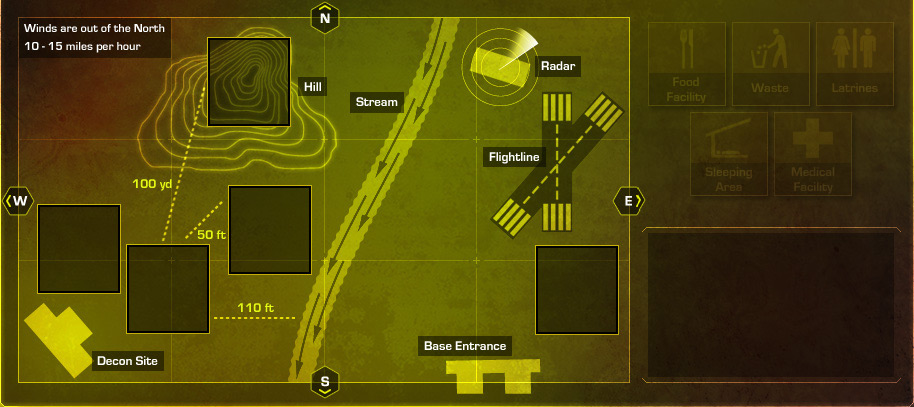
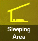

<%@LANGUAGE="JAVASCRIPT" CODEPAGE="1252"%>
<!DOCTYPE html PUBLIC "-//W3C//DTD XHTML 1.0 Transitional//EN" "http://www.w3.org/TR/xhtml1/DTD/xhtml1-transitional.dtd">
<html xmlns="http://www.w3.org/1999/xhtml"><!-- InstanceBegin template="/Templates/besa.dwt" codeOutsideHTMLIsLocked="false" -->
<head>
<meta http-equiv="Content-Type" content="text/html; charset=iso-8859-1" />
<!-- InstanceBeginEditable name="doctitle" -->
<title>BESA WBT</title>
<!-- InstanceEndEditable -->
<meta http-equiv="Content-Type" content="text/html; charset=iso-8859-1">
<link rel="stylesheet" type="text/css" href="../../besa.css" title = "besaCSS">

<script language="JavaScript" type="text/JavaScript" src="../../scripts/APIWrapper.js"></script>
<script language="JavaScript" type="text/JavaScript" src="../../scripts/SCOFunctions.js"></script>
<script language="JavaScript" type="text/javascript" src="../../scripts/jquery.js" ></script>
<script language="JavaScript" type="text/JavaScript" src="../../scripts/access.js"></script>
<script language="JavaScript" type="text/JavaScript" src="../../scripts/besa.js"></script>
<script language="JavaScript" type="text/JavaScript" src="../../scripts/shadowbox.js"></script>

<script language="javascript">
if (typeof(blnTut) == "undefined")  {
	initializePage();
}

function popConfirm(){
	if (confirm("Do you wish to exit this unit?")==true) exitCourse(true);
}
</script>
<!-- InstanceBeginEditable name="head" -->
<style>
	#Content { width:870px; }
</style>
<script type="text/javascript" src="../../scripts/DD.js" ></script>
<script language="JavaScript" type="text/javascript">
<!--
MM_reloadPage(true);


function findNext() {
	var pgURL = "2oea070.html"
	goURL(pgURL);
}

function findBack() {
	var pgURL = "2oea050.html"
	goURL(pgURL);
}

// Initialization
var nObj = 5;
var arrPopup = new Array(4)

arrPopup[0] = "Before proceeding you must complete the question.";
arrPopup[1] = "Correct!  While there are several ways these facilities could be placed, your answers represent best practices by accounting for personnel safety requirements and access considerations.  When selecting a site, you should ensure medical facilities are located so they are accessible to patients and not close to tactical targets.  In addition, they should be located upwind from industrial / environmental liabilities, such as the decon site or flightline.  Food facilities should be located at least 100 yards uphill, upwind, and upstream from latrines and 30 yards from waste disposal areas.  Latrines should be kept a minimum of 100 yards downwind, downhill, and downstream from the food facility, 100 feet from water sources, and at least 50 feet from living / sleeping areas.  Waste disposal areas should be 30 yards from water sources and food facilities. The sleeping areas should be located a minimum of 50 feet from latrines and away from flightline noise.  Select Forward to continue.";
arrPopup[2] = "Incorrect.  The correct answers are now displayed. While there are several ways these facilities could be placed, the answers displayed represent best practices by accounting for personnel safety requirements and access considerations.  When selecting a site, you should ensure medical facilities are located so they are accessible to patients and not close to tactical targets.  In addition, they should be located upwind from industrial / environmental liabilities, such as the decon site or flightline.  Food facilities should be located at least 100 yards uphill, upwind, and upstream from latrines and 30 yards from waste disposal areas.  Latrines should be kept a minimum of 100 yards downwind, downhill, and downstream from the food facility, 100 feet from water sources, and at least 50 feet from living / sleeping areas.  Waste disposal areas should be 30 yards from water sources and food facilities. The sleeping areas should be located a minimum of 50 feet from latrines and away from flightline noise.  Select Forward to continue.";
arrPopup[3]  = "Incorrect.  One or more of your answers is incorrect.  Remember the guidelines for placement of each type of facility are based on what functions the site will serve and how potential health threats relate to the selection of that site.  Try again.";


function onpage() {
	distrload(nObj);
	initDD();
}

function showaudiot() {
}

function MM_preloadImages() { //v3.0
  var d=document; if(d.images){ if(!d.MM_p) d.MM_p=new Array();
    var i,j=d.MM_p.length,a=MM_preloadImages.arguments; for(i=0; i<a.length; i++)
    if (a[i].indexOf("#")!=0){ d.MM_p[j]=new Image; d.MM_p[j++].src=a[i];}}
}

function MM_swapImgRestore() { //v3.0
  var i,x,a=document.MM_sr; for(i=0;a&&i<a.length&&(x=a[i])&&x.oSrc;i++) x.src=x.oSrc;
}

function MM_findObj(n, d) { //v4.01
  var p,i,x;  if(!d) d=document; if((p=n.indexOf("?"))>0&&parent.frames.length) {
    d=parent.frames[n.substring(p+1)].document; n=n.substring(0,p);}
  if(!(x=d[n])&&d.all) x=d.all[n]; for (i=0;!x&&i<d.forms.length;i++) x=d.forms[i][n];
  for(i=0;!x&&d.layers&&i<d.layers.length;i++) x=MM_findObj(n,d.layers[i].document);
  if(!x && d.getElementById) x=d.getElementById(n); return x;
}

function MM_swapImage() { //v3.0
  var i,j=0,x,a=MM_swapImage.arguments; document.MM_sr=new Array; for(i=0;i<(a.length-2);i+=3)
   if ((x=MM_findObj(a[i]))!=null){document.MM_sr[j++]=x; if(!x.oSrc) x.oSrc=x.src; x.src=a[i+2];}
}
//-->
</script>
<!-- InstanceEndEditable -->
</head>

<body onLoad=" onpage();MM_preloadImages('../../sysimages/done_2.jpg')" onUnload="if (closing) exitCourse(false)">
<div id="Banner"></div>
<div id="TopicH" ><!-- InstanceBeginEditable name="EditModuleT" --> 
  OEHSA / Site Selection Considerations
<!-- InstanceEndEditable --></div>
<div id="pageN"><!-- InstanceBeginEditable name="EditPageN" -->Page 6 of 13<!-- InstanceEndEditable --></div>

<div id="PageT"><!-- InstanceBeginEditable name="pageT" -->Appraisal<!-- InstanceEndEditable --></div>
<div id="AudioIcon"><!-- InstanceBeginEditable name="audioIcon" --><!-- InstanceEndEditable --></div>
<div id="Content" ><!-- InstanceBeginEditable name="EditContents" -->
  <p>Drag the facilities or areas to their most  appropriate placements for this sample deployed location.</p>
<!-- InstanceEndEditable --></div>

<!-- InstanceBeginEditable name="others" -->
<div id="targetHoder" style="position:absolute; top:188px; left:31px; width:200px; height:200px;"></div>

<!--=============== Target position =================-->
<div id="target3" style="position:absolute; top:435px; left:160px; width:83px; height:88px; z-index:1;"></div>
<div id="target4" style="position:absolute; top:376px; left:262px; width:83px; height:88px; z-index:2;"></div>
<div id="target1" style="position:absolute; top:228px; left:241px; width:83px; height:88px; z-index:3;"></div>
<div id="target2" style="position:absolute; top:436px; left:569px; width:83px; height:88px; z-index:4;"></div>
<div id="target5" style="position:absolute; top:395px; left:71px; width:83px; height:88px; z-index:4;"></div>

<!--=========== Drag items positon ===========-->
<div id="drag1" style="position:absolute; top:211px; left:680px; width:40px; height:40px;"></div>
<div id="drag2" style="position:absolute; top:211px; left:763px; width:40px; height:40px;"></div>
<div id="drag3" style="position:absolute; top:211px; left:846px; width:40px; height:40px;"></div>
<div id="drag4" style="position:absolute; top:301px; left:721px; width:40px; height:40px;"></div>
<div id="drag5" style="position:absolute; top:301px; left:804px; width:40px; height:40px;"></div>

<!-- *********** Done Button ************** -->
<div id="done" style="position:absolute; left:757px; top:474px; z-index:2;"><a href="javascript:;" onClick="judgeInteraction()" onMouseOver="MM_swapImage('btnDone','','../../sysimages/done_2.jpg',1)" onMouseOut="MM_swapImgRestore()"></a></div>

<!-- *********** Feedback Layer *************** -->
<div class="txtfdbk" id='lyfdbk' style="position:absolute; left:678px; top:423px; width:247px; height:142px; visibility:hidden; z-index:10; overflow-y:auto;"></div>

<div id="snowMapDot">

</div>
<!-- InstanceEndEditable -->
<div id="Prompt"><!-- InstanceBeginEditable name="EditPrompt" -->Drag each facility to the correct location on the map, and then click Done.<!-- InstanceEndEditable --></div>
<div id="Next"><a href="javascript:findNext();" onMouseOver="MM_swapImage('btnNext','','../../sysimages/forward_2.jpg',1)" onMouseOut="MM_swapImgRestore()"></a></div> 

<div id="Repeat" ><a href="javascript:refresh()"  onMouseOver="MM_swapImage('btnRepeat','','../../sysimages/repeat_2.jpg',1)" onMouseOut="MM_swapImgRestore()"></a></div>

<div id="Back"><a href="javascript:findBack();" onMouseOver="MM_swapImage('btnBack','','../../sysimages/previous_2.jpg',1)" onMouseOut="MM_swapImgRestore()"></a></div>
</body>

<div id="lynav">
      <ul id="navigation">

        <!-- InstanceBeginEditable name="maps" -->
		
		<!-- InstanceEndEditable -->
		<li class="unitmenu"><a href="javascript:toMenu(false)" title="Lesson Menu"></a></li>
        <li class="unitmap"><a href="lesson_map.html?TB_iframe=true&amp;width=352&amp;height=451" class="thickbox" title="Lesson Map"></a></li>
		<li class="options"><a href="#" title="Options Menu"></a></li>
			<ul id="optionslist" >
				<li class="help"><a href="../../BESA_Help.pdf" target="_blank" title="Help" ></a></li>
				<li class="audioT"><a href="javascript:showaudiot()" title="Audio Transcript"></a></li>
				<li class="glossary"><a href="../../glossary.html?TB_iframe=true&#038; " class="thickbox" title="Glossary" ></a></li>
				<li class="contactInf"><a href="javascript:goURL('../resources.html')" title="Resources"></a></li>
  			</ul>
        <li class="exit"><a href="javascript:popConfirm()" title="Exit Course"></a></li>
      </ul>
</div>

<!-- InstanceEnd --></html>
